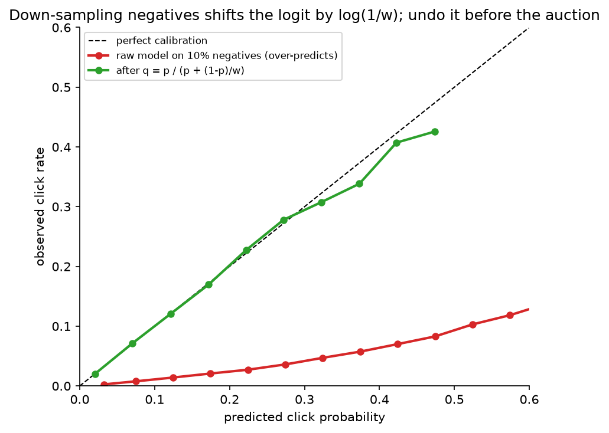

Ads CTR / conversion prediction¶
Why this matters / who asks it. Ads pay for Google, Meta, Pinterest, Snap, TikTok, Amazon's retail media and a long tail of others, and "predict the probability that this user clicks (or converts on) this ad" is the ML system that sets prices in the auction. That makes it different from every other ranking problem in this part: the output is consumed as a probability, by an auction that compares advertisers, so calibration is a correctness requirement rather than a nicety; conversion labels arrive days late; the feature space is billions of sparse ids; and the model is retrained continuously because advertiser behaviour changes by the hour. The interviewer is checking that you know why calibration matters, how to handle delayed and down-sampled labels without breaking it, how to build feature crosses and sparse embeddings at scale, and how the model plugs into bidding and pacing.
TL;DR: the whiteboard in 60 seconds¶
flowchart LR
REQ[Ad request<br/>user, context, slot] --> TG[Targeting + retrieval<br/>eligible ads by audience, budget, policy<br/>~thousands]
TG --> PRE[Pre-ranking<br/>light pCTR / two-tower<br/>→ hundreds]
PRE --> RK[Ranking model<br/>pCTR, pCVR, pInstall…<br/>sparse embeddings + crosses + DNN]
RK --> CAL[Calibration layer<br/>per-segment isotonic / Platt]
CAL --> AUC[Auction<br/>eCPM = bid × pCTR (× pCVR)<br/>+ user-value terms; pacing]
AUC --> SHOW[Winning ads shown]
SHOW -.->|impression, click, delayed conversion| LOG[Logs + online joiner]
LOG --> TRN[Continuous training<br/>online / hourly, delayed-feedback handling,<br/>negative down-sampling + correction]
TRN --> RK
LOG --> MON[Monitoring<br/>calibration, NE, revenue, advertiser ROI]- The auction consumes probabilities: \(\text{eCPM} = \text{bid} \times \hat p_{\text{CTR}} \times 1000\) (CPC), or \(\text{bid} \times \hat p_{\text{CTR}} \times \hat p_{\text{CVR}}\) for conversion-optimised bidding. Over-prediction by 10 % for one advertiser segment moves money; AUC does not see it.
- Calibration is a system: a dedicated post-hoc layer (isotonic/Platt per segment), monitored per segment as \(\sum \hat p / \sum y\), with the negative down-sampling correction \(q = p / (p + (1-p)/w)\) applied before the auction.
- Delayed feedback: conversions arrive over days; treat unlabelled recent examples with a survival model of the delay (Chapelle 2014) or with fake-negative
- importance-weight correction (Twitter, 2019), never as plain negatives.
- Model family: sparse id embeddings (hashed, sharded, compressed) + dense features + explicit feature crosses (FM → Wide & Deep → DeepFM → DCN/DCN-v2 → DLRM's dot-product interactions) + an MLP; multi-task heads for click, conversion types and quality.
- Online / continuous training because the distribution moves hourly: FTRL for linear models (Google), online data joiner and frequent retraining (Facebook), hourly-to-minute incremental training for DNNs.
- Sample selection bias in CVR: conversion is only observed after a click; train CVR over the entire impression space via CTR × CVR (ESMM) or accept the bias and calibrate.
- Memory arithmetic: \(10^{10}\) ids × 64 dims × 4 B = 2.5 TB of embeddings; hashing, compositional embeddings and model-parallel sharding make it fit.
- Budget pacing and bidding sit next to the model; know that a pacing controller spreads spend over the day and that the model's calibration errors show up as advertiser ROI errors.
- Evaluation: logloss and normalised entropy, AUC as a secondary, calibration per segment, then online A/B on revenue, advertiser value and user guardrails.
- Evidence: Google "Ad Click Prediction: a View from the Trenches" (KDD 2013), Facebook "Practical Lessons from Predicting Clicks on Ads" (ADKDD 2014), Meta DLRM (2019), Criteo delayed feedback (KDD 2014), Twitter delayed feedback (RecSys 2019), Alibaba ESMM (SIGIR 2018), Google DCN-v2 (WWW 2021), LinkedIn budget pacing (KDD 2014).
1. Requirements & scoping¶
Functional. For each ad opportunity (a slot on a page or feed position), score every eligible ad with the probabilities the auction needs (click, and for conversion-optimised campaigns each conversion type), return them with the bid and pacing signals to the auction, and log everything needed to train and to bill.
Non-functional, ask for or assume.
| Quantity | Ask | Defensible assumption |
|---|---|---|
| Requests | "Ad requests per second at peak? Ads scored per request?" | 100k requests/s peak × 500 ads scored = \(5 \times 10^7\) scores/s |
| Latency | "Budget for the model call inside the auction?" | 30–50 ms for retrieval + ranking; the page's total is 200 ms |
| Features | "How many sparse ids? Cardinality?" | \(10^9\)–\(10^{10}\) distinct ids across user, ad, advertiser, context |
| Freshness | "How fast must a new ad or a budget change be reflected?" | Ad: minutes; budget/pacing: seconds; model: hourly |
| Labels | "Click attribution window? Conversion window?" | Clicks: minutes; conversions: 1–7 days (some up to 28) |
| Constraints | "Policy filters, frequency caps, brand safety?" | Applied at targeting/retrieval and re-ranking |
Success metrics.
- North star: revenue and advertiser value (conversions delivered per dollar, cost per acquisition). An ads system that raises short-term revenue by over-charging advertisers loses them.
- Guardrails: user-side (ad load, hide/report rate, session length), advertiser ROI by segment, calibration ratio per segment, latency, budget-pacing error.
- Offline proxies: logloss and normalised entropy (NE), AUC, calibration (reliability diagrams, \(\sum \hat p / \sum y\) per segment), and simulated auction metrics (replay the auction with new scores, measure revenue and winner churn).
Questions a staff engineer asks.
- "Which bidding products do we support, CPM, CPC, oCPM/CPA? That decides which heads I need and which must be calibrated."
- "Is the auction second-price / VCG? Then over-prediction changes who wins and what they pay; I'll need per-advertiser calibration monitoring."
- "What is the conversion attribution window and how are conversions reported, pixel, server-to-server, app SDK? Each has a different delay distribution."
- "How is the id space growing? Do we have an embedding-table memory budget?"
- "What is our exploration policy for new ads? Without it, new ads never get labels and the auction never learns their value."
2. Data¶
Sources. Impression logs joined with the features served; click logs; conversion events from advertiser pixels, server-to-server postbacks and app SDKs; advertiser metadata (campaign, creative, category, bid, budget, targeting); user features (history of engagements with ads and organic content, declared and inferred interests where policy allows); context (surface, position, device, time, app).
The online joiner. Impressions and clicks arrive on different streams; the training example is created when a click arrives within the window or when the window expires without one. Facebook's 2014 paper describes such an online joiner feeding continuous training, and the failure mode to name: if the joiner's window is too short, real clicks become negatives and the model's calibration drifts downward.
Labels and their delays.
- Click: seconds to minutes; attribution windows of a few minutes handle late arrivals.
- Conversion: hours to days (purchases), longer for high-consideration goods; reported through pixels and postbacks that are themselves delayed and lossy. A conversion window of 7 days means a training example is not fully labelled for a week; a model trained hourly must decide what to do with the last week of examples.
- Quality/negative labels: hides, reports, "not interested", landing-page bounce.
Biases.
- Selection bias in CVR: conversions are observed only for clicked impressions, which are a biased sample. A CVR model trained on clicks and applied to all impressions is miscalibrated on the unclicked majority.
- Position and format bias: the same ad in position 1 vs 5 or as video vs static.
- Auction feedback loop: the model's scores decide which ads get impressions, so labels concentrate on ads the model already likes; new ads and new advertisers starve without exploration (a small forced budget, or an uncertainty bonus).
- Survivorship: paused or rejected ads disappear from the logs.
- Negative down-sampling (deliberate): negatives are kept at a rate \(w\) to shrink the training set; this is a bias you introduce and must correct (§3.5).
Features. Sparse ids (user, ad, creative, advertiser, campaign, page, app, query, placement) as embeddings; dense counters (user's ad CTR over windows, ad's CTR over windows, advertiser-level rates), each with time decay; categorical context; user sequence features (recent engaged ads and organic items, with target attention as in the feed chapter); creative content embeddings (image/text/video encoders); cross features, learned rather than enumerated.
Freshness. Counters near-real-time; the ad's own early CTR is one of the most predictive features and must be available within minutes of its first impressions (with a Bayesian prior so that one click over three impressions is not a 33 % CTR).
Privacy. Ads are the most regulated ML system in most companies: consent-gated features, restricted categories (housing, credit, employment) with separate rules, attribution that is increasingly aggregated or on-device (platform privacy changes shift the label pipeline itself), retention limits.
3. Modelling¶
3.1 Baseline: logistic regression on hashed crosses¶
Hash every sparse feature and every hand-chosen pair into a \(2^{28}\)-dimensional space (Weinberger et al., ICML 2009), train logistic regression with FTRL-Proximal online (McMahan et al., KDD 2013), calibrate with isotonic regression. It is fast, online, cheap to serve, easy to debug, and it was Google's production system in 2013. Its limit is that crosses must be enumerated by hand and generalise poorly to unseen combinations.
3.2 Feature crosses: the lineage you should be able to draw¶
The problem: CTR depends on interactions (this user × this advertiser category × this placement) that a linear model over ids cannot represent unless the cross is enumerated, and enumerating crosses of \(10^9\)-cardinality ids is hopeless.
Factorization machines (Rendle, ICDM 2010) give every feature an embedding \(v_i \in \R^k\) and model pairwise interactions as dot products:
so a never-seen pair \((i, j)\) still gets a score from \(v_i\) and \(v_j\), which were each learned from other pairs. Cost is \(O(kn)\) via the identity \(\sum_{i<j}\langle v_i, v_j\rangle x_i x_j = \tfrac12 \sum_f \bigl[(\sum_i v_{if} x_i)^2 - \sum_i v_{if}^2 x_i^2\bigr]\).
Wide & Deep (Cheng et al., 2016, arXiv:1606.07792, Google Play): a wide linear part over hand-crossed ids (memorisation) plus a deep MLP over embeddings (generalisation), trained jointly. DeepFM (Guo et al., IJCAI 2017, arXiv:1703.04247) replaces the hand-crossed wide part with an FM over the same embeddings the deep part uses, so no manual crosses remain.
Deep & Cross Network (Wang et al., ADKDD 2017, arXiv:1708.05123) learns bounded- degree polynomial crosses explicitly with a cross layer, \(x_{l+1} = x_0\, (w_l^\top x_l) + b_l + x_l\); DCN-v2 (Wang et al., WWW 2021, arXiv:2008.13535) makes the cross full-rank, \(x_{l+1} = x_0 \odot (W_l x_l + b_l) + x_l\), with a low-rank mixture-of-experts variant for cost, and reports production deployment at Google with gains over the original DCN.
DLRM (Naumov et al., 2019, arXiv:1906.00091, Meta): embedding tables for sparse ids, a bottom MLP for dense features, pairwise dot-product interactions between all embedding vectors and the dense projection, then a top MLP. DLRM's contribution is as much systems as modelling: the embedding tables are model-parallel across devices (each device holds a shard of the tables) while the MLPs are data-parallel, with an all-to-all exchange in between, which is the standard shape of a large recommendation model today.
For the interview: draw "sparse ids → embeddings; dense → MLP; explicit crosses (FM/DCN/dot-product); concatenate; MLP; multi-task heads", and justify the cross mechanism you pick by serving cost (dot-product interactions and DCN-v2 are cheap; attention-based crosses are not).
3.3 Multi-task heads and the CVR selection-bias problem¶
The auction needs \(\hat p_{\text{CTR}}\) and, for conversion-optimised campaigns, \(\hat p_{\text{CVR}} = P(\text{conv} \mid \text{click})\) per conversion type. Train them as heads on a shared trunk (MMoE/PLE as in the feed chapter) with the click-through and conversion labels.
The subtlety: CVR labels exist only for clicked impressions, and at serving time the model must score every impression. ESMM (Ma et al., SIGIR 2018, arXiv:1804.07931, Alibaba) trains on the entire impression space by modelling \(P(\text{click}, \text{conv} \mid x) = P(\text{click} \mid x)\, P(\text{conv} \mid \text{click}, x)\) with two heads whose product is trained against the "click-and-convert" label over all impressions, so the CVR head is never fitted on the biased clicked subset alone. The alternative is to train CVR on clicks only and accept that its calibration on unclicked impressions is unknown; that is tolerable when the auction only uses CVR for impressions the CTR head already thinks will be clicked, and intolerable when CVR feeds bidding directly.
3.4 Calibration: why and how¶
Why it is a correctness requirement. In a second-price or VCG-style auction with CPC bids, the ranking score for an ad is \(\text{bid}_a \times \hat p_a\) and the price paid depends on the next-highest score. If \(\hat p\) is 20 % too high for video creatives and correct for static ones, video ads win auctions they should lose and pay more than they should; advertisers with video creatives see their cost per click rise and leave. AUC is invariant to any monotone transform of the scores and is blind to all of this. Google's 2013 paper devotes a section to a calibration layer; the Facebook 2014 paper reports calibration alongside NE as a primary metric.
How.
- Loss: logloss already rewards calibration in expectation, but only on the training distribution; sampling and regularisation break it.
- Post-hoc layer: Platt scaling (a logistic fit on the logit) or isotonic regression (monotone piecewise-constant), fitted on a recent held-out window, per segment (surface × format × advertiser vertical) because miscalibration is rarely uniform. Google's paper used isotonic regression or Poisson regression for this layer.
- The down-sampling correction (§3.5), applied before the post-hoc layer.
- Monitoring: calibration ratio \(\sum_i \hat p_i / \sum_i y_i\) per segment per hour, reliability diagrams, and expected calibration error; alert on drift, because a broken feature usually shows up as a calibration shift before it shows up in AUC.
3.5 Negative down-sampling and its correction¶
Ads data is ~99 % negatives. Keeping every negative multiplies training cost for little information, so negatives are kept at rate \(w\) (say 0.1) and positives at rate 1. The learned model then estimates the wrong probability. If the true odds are \(\frac{p}{1-p}\), the down-sampled data has odds \(\frac{p}{(1-p)w}\), so the model learns \(p'\) with \(\frac{p'}{1-p'} = \frac{p}{(1-p)\,w}\). Solving for \(p\):
which is a shift of the logit by \(-\log(1/w)\): \(\operatorname{logit}(p) = \operatorname{logit}(p') + \log w\). Facebook's 2014 paper gives exactly this re-calibration formula; the figure shows the effect.

A model trained on 10 % of the negatives over-predicts click probability by a factor that grows with the score; applying \(p = p' / (p' + (1-p')/w)\) restores calibration. Interviewers ask for this formula; derive it from the odds.
An alternative to the formula is importance weighting each negative by \(1/w\) in the loss, which keeps the model calibrated in expectation but increases gradient variance; most teams do the cheap post-hoc shift.
3.6 Delayed feedback for conversions¶
A conversion label for an impression at time \(t\) may arrive any time in the following \(W\) days. Training hourly on the last day's data with "no conversion yet" = negative systematically under-predicts CVR, and the under-prediction is worst for the freshest data, which is precisely what continuous training emphasises.
Survival-model approach (Chapelle, KDD 2014, Criteo). Model two things: whether the click will ever convert, \(p(x) = P(C = 1 \mid x)\), and the delay \(D\) until conversion, e.g. exponential with rate \(\lambda(x)\). At elapsed time \(e\) since the click, the likelihood of what has been observed is
Maximising this likelihood jointly over \(p\) and \(\lambda\) lets a recent unlabelled example contribute "probably not converted yet" rather than "negative". Serve \(p(x)\). Meaning: the model learns the delay distribution and discounts recent negatives accordingly.
Fake-negative approach (Ktena et al., RecSys 2019, Twitter). For continuous training, ingest every example immediately as a negative; when a conversion arrives, ingest a positive for the same example; correct the resulting bias with importance weights derived from the model's own predictions (or with a positive-unlabelled loss). Cheaper to run in a streaming trainer, and the paper reports it working for Twitter's conversion models.
Which to choose. The survival model when you can afford to hold examples and you need calibrated CVR for bidding; the fake-negative scheme when the trainer is fully streaming and freshness dominates. In both cases, validate calibration against fully matured labels from weeks ago, because that is the only unbiased check.
3.7 Sparse embeddings at scale¶
Memory. \(10^{10}\) ids × 64 dims × 4 B = 2.56 TB in fp32; fp16 halves it; that still does not fit on one host. Options, in the order to mention them:
- Hashing ids into a fixed table (\(2^{30}\) rows) with collisions; the collisions are noise the model tolerates, and the table size is a knob.
- Compositional embeddings (Shi et al., KDD 2020, arXiv:1909.02107, Facebook): quotient-remainder trick: two small tables indexed by \(\lfloor id / m \rfloor\) and \(id \bmod m\), combined by element-wise product, giving unique vectors with \(O(\sqrt{N})\) memory.
- Mixed dimensions: popular ids get 64 dims, rare ids 8.
- Sharding across devices (DLRM's model parallelism) with an all-to-all.
- Expiry of ids not seen for \(k\) days (Monolith-style collisionless tables with eviction, in the feed chapter).
- Quantisation of the tables to int8 for serving.
Bandwidth. Serving a 500-ad request touches thousands of embedding rows; the lookup, not the MLP, dominates; keep the hot tables in accelerator or host memory close to the model and batch lookups.
3.8 Online learning¶
Advertiser behaviour, creatives, budgets and user interest drift within a day, and the Facebook paper reports that data freshness measurably matters: retraining daily versus weekly gave a visible NE improvement, and they moved the linear part to online learning. Google's FTRL-Proximal is the reference online learner for sparse logistic regression, with per-coordinate learning rates and \(L_1\) sparsity. For DNNs today: the sparse embedding tables update online (they change fastest), the dense MLPs update hourly or daily from checkpoints, and every update passes an automatic calibration and NE gate before it reaches serving.
3.9 The auction, bidding and pacing (what you must know as literacy)¶
- Score: \(\text{eCPM}_a = \text{bid}_a \times \hat p_{\text{CTR},a}\) for CPC; for conversion-optimised bidding \(\text{bid}_a \times \hat p_{\text{CTR},a} \times \hat p_{\text{CVR},a}\) where the bid is a target cost per action; platforms add user-value terms (predicted negative feedback) to the score. Meta's public auction documentation describes the auction as ranking by a "total value" that combines the bid, estimated action rates and ad quality.
- Pricing: generalized second price (Edelman, Ostrovsky & Schwarz, AER 2007) or VCG; either way, a calibration error moves prices.
- Pacing: an advertiser's daily budget must be spent smoothly; a feedback controller adjusts the bid multiplier or the participation probability through the day toward a target spend curve (Agarwal et al., "Budget pacing for targeted online advertisements at LinkedIn", KDD 2014; Xu et al., "Smart Pacing for Effective Online Ad Campaign Optimization", KDD 2015). The model's miscalibration appears here as spend that ends too early or too late.
4. Training & serving¶
Pipeline. Impression stream + click stream + conversion stream → online joiner (with attribution windows) → negative down-sampling → feature logging at serve time (the features used in the auction are the training features; never recompute) → continuous trainer (sparse online, dense hourly) → calibration fit on the latest matured window → gates (NE, AUC, calibration per segment, simulated-auction revenue within tolerance) → shadow → canary by traffic slice → full.
Serving. Two-stage within the ads stack: targeting/retrieval (audience eligibility, budget availability, policy) yields thousands of ads; a light pre-ranker (two-tower or small MLP) cuts to hundreds; the full model scores those in one batched GPU (or large-CPU) call. The calibration layer is a table lookup, and the auction runs on the calibrated scores. Budget: ~5 ms retrieval, ~5 ms pre-rank, ~20 ms full model, ~2 ms calibration + auction, inside a 50 ms slot.
Hardware and cost. \(5 \times 10^7\) scores/s at peak with a 50M-parameter dense part is \(5 \times 10^{15}\) FLOP/s ≈ 50 GPUs at 30 % utilisation, plus the embedding lookup infrastructure, plus replicas. The pre-ranker cuts the full-model volume by 10×; that is where the money is saved.
Degradation. Model timeout → pre-ranker scores through the same calibration (fit separately); calibration service down → last known table; feature store slow → missing-feature defaults with a monitored rate; anything worse → the auction runs on historical eCPM per ad.
5. Evaluation & experimentation¶
Offline.
- Logloss and normalised entropy: NE is logloss divided by the entropy of the background CTR, so it is comparable across surfaces with different base rates (He et al., 2014). Lower is better; a 0.1 % NE change is meaningful at scale.
- AUC: secondary, because it ignores calibration; useful for ranking-only changes.
- Calibration: \(\sum \hat p / \sum y\) per segment and reliability diagrams on the latest matured window (conversions must be given their full attribution window).
- Auction replay: re-run logged auctions with the new scores; report revenue, winner-change rate and per-advertiser cost shifts. A model that changes 30 % of auction winners is a large product change regardless of NE.
- Pitfalls: evaluating CVR on recent data (labels immature); random splits (leak advertiser-level drift); computing calibration on down-sampled data without the correction.
Online.
- A/B on revenue and advertiser outcomes (conversions per dollar, CPA vs target) with user guardrails (ad load, hides, session length). Ads A/B tests have an interference problem: budgets are shared across arms, so a treatment that spends an advertiser's budget faster starves the control; use budget-split designs or advertiser-level randomisation for pacing changes.
- Long-term holdouts for anything that affects advertiser learning phases.
Monitoring and retraining triggers. Calibration ratio per segment per hour (the primary alarm), NE on matured data, feature null and distribution drift, score distribution shift, join rates (impressions with matched features), conversion arrival curves (a change means a pixel broke, not that users changed), pacing error. Retrain continuously; roll back automatically on a calibration breach.
6. Trade-offs & alternatives¶
| Decision | Chosen | Alternative | When you'd flip |
|---|---|---|---|
| Model family | Embeddings + explicit crosses (DCN-v2 / dot-product) + MLP, multi-task | GBDT + LR (Facebook 2014) | Small feature space, CPU-only serving, need for interpretability; still a fine pre-ranker |
| Crosses | Learned (FM/DCN/dot-product) | Hand-enumerated hashed crosses | Very low latency linear serving; as the "wide" part alongside deep |
| Negatives | Down-sample + logit correction | Keep all negatives | Training cost is not a constraint (rare) |
| Delayed conversions | Survival model (Chapelle) | Fake negatives + importance weights (Twitter) | Fully streaming trainer where holding examples is impossible |
| CVR training space | Entire-space (ESMM) | Clicked-only | CVR is not used for bidding on unclicked impressions |
| Calibration | Post-hoc per segment, monitored | Trust logloss | Never; the auction needs it |
| Training | Continuous (sparse online, dense hourly) | Daily batch | Advertiser mix is stable and freshness experiments show no gain |
| Embedding memory | Hashing + compositional + sharding | One giant table | It fits (small id space) |
| Exploration | Small forced budget + uncertainty bonus for new ads | None | Never none; tune the budget by measured cold-start revenue |
Failure modes.
- A pixel or SDK breaks: conversion arrival curve collapses; CVR trains toward zero; pacing overspends. Detect on the arrival curve, not on the model.
- Calibration drift after a UI change: format-level calibration ratio alarms; refit the layer before retraining the model.
- Joiner window too short: real clicks become negatives; detected as a slow downward calibration drift on clicks.
- Embedding table saturation: collision rate rises, rare-id quality drops; monitor per-bucket occupancy.
- Auction interference in A/B: treatment spends control's budget; use budget-aware designs.
7. How real companies did it: as mock interviews¶
7.1 Google: "predict clicks for sponsored search, online, at scale"¶
Interviewer prompt. "Billions of ad impressions a day, billions of sparse features, a model that must update as advertisers change bids and creatives, and memory that must not grow with the feature space. Design it."
Walkthrough. Clarify: a linear model is acceptable if it is online and calibrated; memory is the binding constraint. Metrics: logloss, AUC, calibration. Data: streamed impressions with hashed features. Model: logistic regression on hashed features trained online with FTRL-Proximal (per-coordinate learning rates, \(L_1\) regularisation for sparsity), memory reduced with probabilistic feature inclusion and fewer bits per weight, and a separate calibration layer. Serve: the sparse weight vector; per-prediction confidence estimates. Evaluate: online metrics on the stream, with careful attention to calibration.
What the source says. McMahan et al., "Ad Click Prediction: a View from the Trenches" (KDD 2013) describes FTRL-Proximal, per-coordinate learning rates, memory savings (probabilistic feature inclusion, reduced-precision weights, sharing across similar models), a calibration layer, confidence estimates, and a list of things that did not help in their setting.
How to say it in the interview: the calibration layer
"I'd put an explicit calibration layer between the model and the auction and monitor it per segment, rather than trusting logloss to keep the probabilities honest, because Google reported in 'Ad Click Prediction: a View from the Trenches' (KDD 2013) that systematic miscalibration arises from training choices and that they added a dedicated calibration stage; the auction consumes probabilities, so a 10 % over-prediction on one format silently reprices that format. The alternative is to rely on the loss alone. A separate layer costs one more thing to refit when the model changes, so I'd refit it automatically on the latest matured window with every model push."
7.2 Facebook: "GBDT features, LR on top, and freshness"¶
Interviewer prompt. "Our click model is a logistic regression on hand-built features. Improve it without exploding serving cost, and tell me how often to retrain."
Walkthrough. Clarify: CPU serving, hourly-level freshness desired. Metrics: normalised entropy and calibration. Data: an online joiner producing training examples from impression and click streams; negatives down-sampled. Model: boosted trees as a feature transformer (each leaf becomes a binary feature) feeding a logistic regression; the LR trained online. Serve: cheap. Evaluate: NE, with experiments on retraining frequency and on which features (historical vs contextual) carry the signal.
What the source says. He et al., "Practical Lessons from Predicting Clicks on Ads at Facebook" (ADKDD 2014) reports the GBDT-features-plus-LR hybrid, the importance of data freshness (a measurable NE gain from daily versus weekly retraining), online learning for the LR, the online joiner, negative down-sampling with the re-calibration formula \(q = p/(p + (1-p)/w)\), and that historical (behavioural) features dominated contextual ones.
How to say it in the interview: down-sampling and freshness
"I'd down-sample negatives to about a tenth and correct the output with \(p = p'/(p' + (1-p')/w)\), which Facebook published in 'Practical Lessons from Predicting Clicks on Ads at Facebook' (2014); the alternative is training on everything, which costs ten times the compute for negligible information. On cadence, the same paper showed a measurable normalised-entropy gain from daily over weekly retraining, and they moved the linear part online, so I'd design for at least hourly refresh of the sparse parameters from the start rather than retrofitting it. The trade-off is an online joiner whose attribution window becomes a correctness parameter: too short and clicks become negatives."
7.3 Meta: "the model does not fit on one GPU"¶
Interviewer prompt. "Our ranking model has terabytes of embedding tables and a modest MLP. Design the model and its training system."
Walkthrough. Clarify: number of sparse features, table sizes, GPU memory. Model: embeddings for sparse ids, bottom MLP for dense, pairwise dot-product interactions, top MLP. Training: model parallelism for the tables (each GPU holds a shard), data parallelism for the MLPs, all-to-all between them. Serve: tables on host memory or sharded across accelerators. Evaluate: accuracy on public benchmarks and throughput.
What the source says. Naumov et al., "Deep Learning Recommendation Model for Personalization and Recommendation Systems" (2019, arXiv:1906.00091) describes DLRM's architecture and its hybrid model-parallel (embeddings) / data-parallel (MLP) training with all-to-all communication. Shi et al., "Compositional Embeddings Using Complementary Partitions for Memory-Efficient Recommendation Systems" (KDD 2020, arXiv:1909.02107) describes the quotient-remainder trick for shrinking tables.
How to say it in the interview: embedding memory
"For the id features I'd budget the embedding memory first: ten billion ids at 64 dimensions is a couple of terabytes, so it will not live on one device. I'd shard the tables model-parallel and keep the dense network data-parallel, which is the DLRM design Meta published in 2019, and reduce the tables with hashing and the quotient-remainder compositional embeddings from their KDD 2020 paper. The alternative is one hashed table that fits. That buys simplicity and pays for it in collision noise on the rare ids that carry the most advertiser-specific signal. I'd flip back to a single hashed table only for a pre-ranker, where the accuracy loss is acceptable."
7.4 Criteo and Twitter: "conversions arrive a week late"¶
Interviewer prompt. "We bid on conversions. Conversions are attributed up to seven days after the click. Our model retrains hourly and keeps under-predicting on fresh data. Fix it."
Walkthrough. Clarify: the delay distribution, whether the trainer can hold examples. Model: either a joint model of conversion probability and delay (exponential hazard) trained on the observed-so-far likelihood, or a streaming scheme that ingests fake negatives and corrects with importance weights. Evaluate: calibration against matured labels.
What the sources say. Chapelle, "Modeling Delayed Feedback in Display Advertising" (KDD 2014) introduces the survival-style model with an exponential delay and shows it improves over treating unmatured examples as negatives on Criteo data. Ktena et al., "Addressing Delayed Feedback for Continuous Training with Neural Networks in CTR prediction" (RecSys 2019) compares loss functions for continuous training under delayed feedback at Twitter, including fake-negative schemes with importance weighting.
How to say it in the interview: delayed feedback
"I would not treat 'no conversion yet' as a negative. If the trainer can hold examples, I'd fit conversion probability and conversion delay jointly, as Chapelle did in 'Modeling Delayed Feedback in Display Advertising' (KDD 2014), so that a two-hour-old click contributes 'probably not converted yet' rather than 'no'. If the trainer is fully streaming, I'd use the fake-negative scheme with importance weighting that Twitter evaluated in their RecSys 2019 paper. The alternative (waiting a week for labels) costs freshness, which the Facebook paper shows is worth real NE. The trade-off is that both corrections depend on a delay model that itself drifts, so I'd validate calibration only on matured labels from weeks ago."
7.5 Alibaba: "CVR is trained on clicks but served on impressions"¶
Interviewer prompt. "Our conversion model is trained on clicked impressions and scores every impression. It is miscalibrated on the ones that would not be clicked. Redesign the training."
Walkthrough. Model: two heads, CTR and CVR, trained on the entire impression space through the product \(P(\text{click}) \cdot P(\text{conv} \mid \text{click})\) against the click-and-convert label; shared embeddings. Evaluate: CVR AUC on the full space.
What the source says. Ma et al., "Entire Space Multi-Task Model: An Effective Approach for Estimating Post-Click Conversion Rate" (SIGIR 2018, arXiv:1804.07931) introduces ESMM to address sample selection bias and data sparsity in CVR estimation, with results on Taobao data.
How to say it in the interview: the CVR training space
"For the conversion head I'd train over the entire impression space via the product of the click and post-click-conversion heads, which is the ESMM design Alibaba published at SIGIR 2018 to fix the selection bias of training CVR only on clicks. The alternative (clicked-only training) is simpler and fine when the auction only needs CVR for likely-clicked ads; the trade-off of ESMM is that the CVR head is learned indirectly, so I'd still check its calibration on clicked impressions directly."
7.6 LinkedIn: "spend the budget evenly"¶
Interviewer prompt. "Advertisers give us a daily budget. Our system spends it in the first two hours, on the cheapest impressions. Fix it, and tell me how this interacts with the click model."
Walkthrough. Model: a pacing controller that adjusts each campaign's participation rate or bid multiplier toward a target spend curve derived from forecast traffic; the click model's calibration errors surface as pacing errors. Evaluate: spend smoothness, advertiser outcomes, revenue.
What the source says. Agarwal et al., "Budget pacing for targeted online advertisements at LinkedIn" (KDD 2014) describes a pacing system that controls participation in auctions to spread spend across the day and reports improved advertiser and platform outcomes.
How to say it in the interview: pacing literacy
"I'd make sure the interviewer knows I see the model as one input to a control loop: LinkedIn's KDD 2014 pacing paper controls each campaign's auction participation toward a target spend curve, which means a miscalibrated pCTR shows up as a pacing error before anyone looks at a reliability diagram. So my monitoring would include pacing error per campaign segment as a model-health signal. The alternative is to treat pacing as someone else's system; the cost of that is debugging calibration two teams away from where it hurts."
8. Staff-level follow-ups¶
Your new model has +0.3 % AUC and −0.2 % NE offline but revenue is flat online. Why?
Ranking quality improved but the auction did not change much: check the winner-change rate in auction replay. If winners changed and revenue is flat, look at calibration per segment: a better ranker that is 5 % under-calibrated lowers every eCPM and the second price with it. If calibration is fine, check pacing: if campaigns were already budget-constrained, a better model shifts which impressions they buy, not how much they spend, and the gain appears as advertiser ROI, not platform revenue. That is still a win; measure it on the advertiser side.
Derive the down-sampling correction.
Down-sampling negatives at rate \(w\) multiplies the observed odds by \(1/w\); the model learns \(p'\) with \(p'/(1-p') = \frac{p}{1-p}\cdot\frac1w\). Solve: \(p = \frac{p'}{p' + (1-p')/w}\), equivalently subtract \(\log(1/w)\) from the logit. Then note that it only holds if the down-sampling is independent of \(x\); if you down-sample negatives differently per surface, the correction is per surface.
How do you handle a new ad with no history?
Content embeddings of the creative and the advertiser's history give a prior; an exploration budget (or an upper-confidence bonus on the score) buys the first few thousand impressions; a Bayesian smoothed early CTR (a Beta prior at the advertiser or category rate) becomes a feature within minutes. Cap the exploration spend and measure cold-start revenue per dollar so the budget is a tuned number, not a guess.
5× traffic spike during a shopping event: what happens?
Ads systems are unusual in that the spike is also the highest-value traffic, so shedding must be careful. Pre-ranker-only scoring for low-value slots, a smaller candidate set from targeting, cached scores for repeat (user, ad) pairs within minutes, and pacing controllers that anticipate the traffic forecast so budgets are not exhausted in the first hour. The model service is provisioned for the forecast peak because it directly gates revenue.
Why multi-task rather than one model per head?
Shared embeddings for the sparse ids (which dominate parameters and memory), transfer from the dense click signal to the sparse conversion signals, one serving call instead of several, and consistent calibration monitoring. The risk is negative transfer between click and conversion heads, handled with MMoE/PLE gates. I'd keep a separate model only for heads with a different input space (e.g. brand-safety classifiers on the creative).
How would you evaluate calibration when conversions take a week?
Only on matured windows: score the examples from two weeks ago with the model version that was serving then (from the served-feature log), attribute conversions with the full window, and compute the calibration ratio per segment. For the current model, the survival model's predicted delay distribution gives an expected-so-far conversion count to compare against observed-so-far, which catches gross breaks early.
What is the interference problem in ads A/B tests?
Budgets and auctions are shared across arms. If the treatment model bids more accurately for a campaign, it may spend the campaign's budget in the treatment arm and starve the control, making the control look worse than it is; and both arms compete in the same auctions, so prices in one arm depend on the other. Use budget-split experiments (each arm gets a share of the budget), advertiser-level randomisation for pacing changes, or synthetic-auction replay for pricing changes, and be explicit about which effects the design can and cannot measure.
What breaks first at 10× scale?
Embedding tables (memory and lookup bandwidth), then the online joiner (state for open attribution windows grows with traffic), then the calibration layer's segment count: too many segments and too few labels per segment, which forces a hierarchical or learned calibrator. The dense network scales by adding replicas.
9. Scaling & evolution¶
- Startup ad network: hashed-feature logistic regression with FTRL, daily isotonic calibration, no embeddings; auction replay for evaluation; one engineer can run it.
- Mid-scale: GBDT features + LR or a small DNN with hashed embeddings, an online joiner, hourly retraining, per-segment calibration, a pre-ranker.
- Hyperscale: DLRM-shaped multi-task models with sharded tables, continuous training of sparse parameters, survival-model CVR, budget-aware experimentation, dedicated calibration and pacing services.
- Batch → real-time: the online joiner and streaming counters come first; online sparse updates second; the fake-negative scheme for conversions when the trainer becomes fully streaming.
- LLM-augmented: creative understanding (image/text/video embeddings from foundation models) as features; LLM-generated creative variants that the model then scores; advertiser-intent understanding for targeting; none of it in the 50 ms path. It runs at ad-creation time and its outputs are cached as features.
References¶
- McMahan, H. B. et al. "Ad Click Prediction: a View from the Trenches." KDD 2013 (research.google).
- He, X. et al. "Practical Lessons from Predicting Clicks on Ads at Facebook." ADKDD 2014 (ai.meta.com).
- Naumov, M. et al. "Deep Learning Recommendation Model for Personalization and Recommendation Systems." 2019 (arXiv:1906.00091).
- Shi, H.-J. M. et al. "Compositional Embeddings Using Complementary Partitions for Memory-Efficient Recommendation Systems." KDD 2020 (arXiv:1909.02107).
- Cheng, H.-T. et al. "Wide & Deep Learning for Recommender Systems." DLRS 2016 (arXiv:1606.07792).
- Guo, H. et al. "DeepFM: A Factorization-Machine based Neural Network for CTR Prediction." IJCAI 2017 (arXiv:1703.04247).
- Wang, R. et al. "Deep & Cross Network for Ad Click Predictions." ADKDD 2017 (arXiv:1708.05123).
- Wang, R. et al. "DCN V2: Improved Deep & Cross Network and Practical Lessons for Web-scale Learning to Rank Systems." WWW 2021 (arXiv:2008.13535).
- Rendle, S. "Factorization Machines." ICDM 2010 (dl.acm.org).
- Weinberger, K. et al. "Feature Hashing for Large Scale Multitask Learning." ICML 2009.
- Chapelle, O. "Modeling Delayed Feedback in Display Advertising." KDD 2014 (dl.acm.org).
- Ktena, S. I. et al. "Addressing Delayed Feedback for Continuous Training with Neural Networks in CTR prediction." RecSys 2019 (arXiv:1907.06558).
- Ma, X. et al. "Entire Space Multi-Task Model: An Effective Approach for Estimating Post-Click Conversion Rate." SIGIR 2018 (arXiv:1804.07931).
- Agarwal, D. et al. "Budget pacing for targeted online advertisements at LinkedIn." KDD 2014 (dl.acm.org).
- Xu, J. et al. "Smart Pacing for Effective Online Ad Campaign Optimization." KDD 2015.
- Edelman, B., Ostrovsky, M., Schwarz, M. "Internet Advertising and the Generalized Second-Price Auction." American Economic Review 2007.
- Meta Business Help Center. "About Ad Auctions" (the "total value" description of the auction) (facebook.com/business/help).
- Book cross-references: feed ranking (multi-task, sequence features), uncertainty & reliability (calibration).